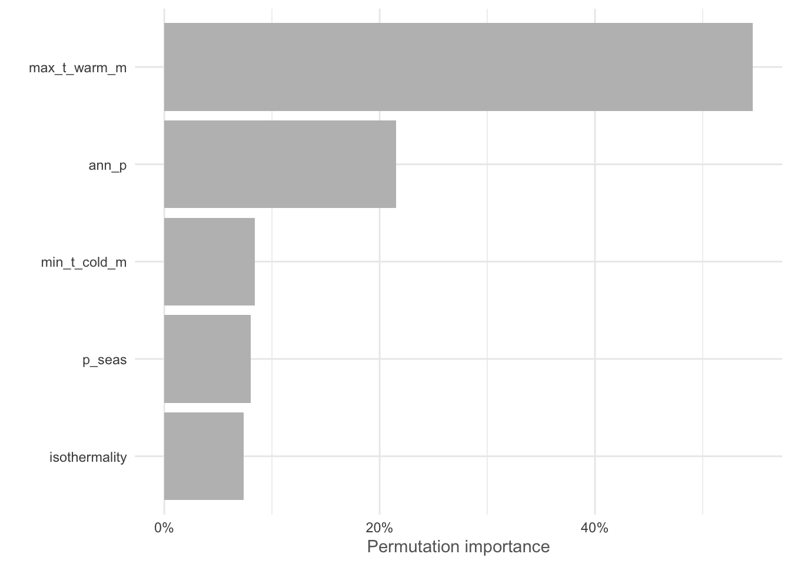
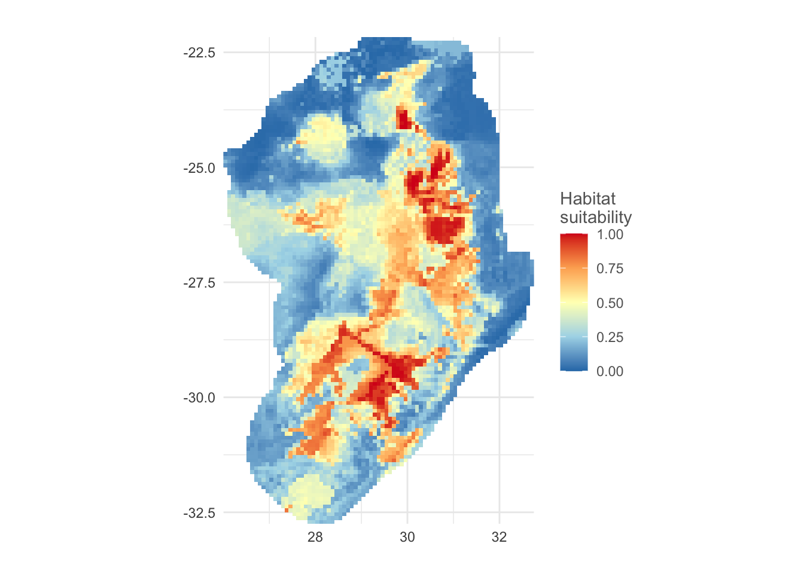

Species Distribution Models
Note: thank you to Geethen Singh for an earlier version of this practical.
Learning objectives
- Define a calibration area
- Process environmental covariate data
- Process species presence data
- Create pseudo-absence species points
- Account for spatial autocorrelation with spatial blocks
- Fit a random forest model
- Estimate model accuracy
- Determine variable importance
- Visualise variable response curves
- Produce a habitat suitability prediction
Introduction
Species Distribution models (SDMs, also called habitat suitability models or ecological niche models, depending on the goal) involves the identification of areas of likely species occurrence by learning a relationship between known occurrences and environmental variables (covariates). The ‘learning’ of species-environment relationships is accomplished by machine learning algorithms. For this short course, the inner-workings of these algorithms are beyond the scope of our available time. There are many papers describing SDMs, but if you are new to the field, this Elith & Leathwick 2009 paper is a good start.
SDMs are used for a range of purposes, not limited to understanding drivers of species distributions, conservation planning and risk forecasting. This tutorial is likely to be challenging for a beginner in spatial analysis, but is designed to try to balance thoroughness with simplicity.
Our overall goal is to produce a prediction map of the most suitable habitat for a species of interest and to better understand the environmental drivers behind its current distribution. Along the way, we will carefully process our data to make sure we have the best inputs and then provide a model evaluation procedure to determine how robust our findings are.
Tutorial
We will be using two new-ish R packages for running species
distribution models: flexSDM and SDMtune.
These packages have several features, which are useful in processing and
modeling our SDM data. We will then use blockCV to create a
spatial blocking space to improve the robustness of our findings. Most
of the other packages, you should be familiar with by now.
#### Install.packages ----
# install.packages('raster')
# install.packages('remotes')
# devtools::install_github("sjevelazco/flexsdm")
# Select 3 and then No
# install.packages('corrplot')
# install.packages('blockCV')
# install.packages('SDMtune')
#### Load libraries ----
library(terra) # raster manipulation
library(rnaturalearth) # country boundaries
library(tidyverse) # data manipulation and plotting
library(corrplot) # correlation plots
library(blockCV) # spatial block for cross-validation
library(sf) # vector manipulation
library(flexsdm) # SDM package
library(SDMtune) # SDM package
library(patchwork) # combine ggplotsLoad in data
We will be using the Protea roupelliae locality data that we used in the Making a map tutorial. This data has already been processed and cleaned to remove spurious locations.
We will download data for all countries that overlap with the species localities and then merge these together to make a single country boundary.
Lastly we will be using the WorldClim data as our environmental
covariates. This can be downloaded using the raster package
or loaded in directly from file.
#### Load in data ----
# Read species data
protea <- vect("output/files/making_a_map/p_roup_gbif.shp")
# download and load SA boundary
sern_a <- ne_countries(scale = 'medium', country = c('South Africa', 'Lesotho', 'Swaziland'), returnclass = 'sf')
# dissolve to outer boundary
sern_a %>% group_by(level) %>% summarise() %>% vect() -> sern_a_dissolve
# Download bioclim data
# r <- rast(raster::getData("worldclim",var="bio",res=5))
# returns 19 variables
# or alternatively load from disk
r <- rast("data/sdm/worldclim.tif")Let’s plot out our species and area of interest. For some reason, a few border lines remain in our country border file - this won’t impact our modeling going forward.
#### Visualise raw data ----
plot(r[[1]])
plot(sern_a_dissolve, add = T)
plot(protea, add=T)
Again, we would like to exclude Marion Island, so crop the country boundary data to a reasonable extent.
#### Edit extent of Sern A vector
plot(sern_a_dissolve)
sern_a_dissolve <- crop(sern_a_dissolve, ext(15, 33, -35, -20))
plot(sern_a_dissolve)Check and fix the projections.
#### Check projections ----
crs(r) == crs(protea)## [1] TRUEcrs(r) == crs(sern_a_dissolve)## [1] FALSEsern_a_dissolve <- project(sern_a_dissolve, r)
protea <- project(protea, r)
crs(r) == crs(sern_a_dissolve)## [1] TRUEcrs(r) == crs(protea)## [1] TRUECalibration area
It is really important to only predict our habitat suitability to a region where the species could feasibly occur. So instead of using the whole of southern Africa, we will limit this to a calibration area around our species localities within a 150km buffer zone.
#### Calibration area ----
# Create a 150km buffer around our species points to create a prediction region
ca_protea <- calib_area(data = as.data.frame(protea),
x = 'lon', y = 'lat',
method = c('buffer', width = 150000),
crs = crs(protea))
# Plot it out to see if this works
par(mfrow = c(1,1))
plot(ca_protea)
plot(protea, add = TRUE)
We can then clean this up to only be focused on the countries where this species occurs:
# Intersect this with our country boundary to remove areas in the ocean
aoi <- terra::intersect(ca_protea, sern_a_dissolve)
plot(ca_protea)
plot(aoi, col = 'red', add = TRUE)
plot(protea, add = TRUE)Process the covariate data
There are a few steps we need to take to clean up our worldclim data. First we crop and mask the covariates to our area of interest.
# Mask the covariates to the area of interest
covariates <- mask(crop(r, aoi), aoi)
plot(covariates[[1]])
plot(aoi, add = TRUE)We then rename the bands to more sensible, readable names.
# rename the worldclim bands to more reasonable names
names(covariates)## [1] "bio1" "bio2" "bio3" "bio4" "bio5" "bio6" "bio7" "bio8" "bio9"
## [10] "bio10" "bio11" "bio12" "bio13" "bio14" "bio15" "bio16" "bio17" "bio18"
## [19] "bio19"names(covariates) <- c("mean_ann_t","mean_diurnal_t_range","isothermality", "t_seas", 'max_t_warm_m','min_t_cold_m',"t_ann_range",'mean_t_wet_q','mean_t_dry_q','mean_t_warm_q','mean_t_cold_q','ann_p', 'p_wet_m','p_dry_m','p_seas','p_wet_q','p_dry_q','p_warm_q','p_cold_q')
names(covariates)## [1] "mean_ann_t" "mean_diurnal_t_range" "isothermality"
## [4] "t_seas" "max_t_warm_m" "min_t_cold_m"
## [7] "t_ann_range" "mean_t_wet_q" "mean_t_dry_q"
## [10] "mean_t_warm_q" "mean_t_cold_q" "ann_p"
## [13] "p_wet_m" "p_dry_m" "p_seas"
## [16] "p_wet_q" "p_dry_q" "p_warm_q"
## [19] "p_cold_q"Rasters are often stored with a scaling factor to save on file size. For the temperature data, we will need to rescale these back to their original values.
# Re-scale temperature values
covariates[[c(1:2,5:11)]] <- covariates[[c(1:2,5:11)]]/10
covariates[[3:4]] <- covariates[[3:4]]/100Check for colinearity
Of these 19 different bioclimatic variables, several of them provide us with very similar, redundant information. To avoid this, we can check for collinearity above a certain threshold (0.7 is commonly used).
# Using Pearson correlation
cov_colin <- correct_colinvar(covariates, method = c('pearson', th = "0.7"))
# Take a look at the correlations using corrplot
corrplot(cov_colin$cor_table, tl.cex = 0.6)
It is a baseplot output, so save it to file using a graphics
function, such as pdf(). Remember to turn the plotting
device off using dev.off().
pdf('output/figs/SDM/corr_plot.pdf', width = 8, height = 6)
corrplot(cov_colin$cor_table, tl.cex = 0.6)
dev.off()## quartz_off_screen
## 2# Show which variables are correlated
cov_colin$cor_variables## $mean_ann_t
## [1] "max_t_warm_m" "min_t_cold_m" "mean_t_wet_q" "mean_t_dry_q"
## [5] "mean_t_warm_q" "mean_t_cold_q"
##
## $mean_diurnal_t_range
## [1] "t_seas" "t_ann_range" "p_dry_m" "p_dry_q" "p_cold_q"
##
## $isothermality
## character(0)
##
## $t_seas
## [1] "mean_diurnal_t_range" "min_t_cold_m" "t_ann_range"
##
## $max_t_warm_m
## [1] "mean_ann_t" "mean_t_wet_q" "mean_t_dry_q" "mean_t_warm_q"
## [5] "mean_t_cold_q"
##
## $min_t_cold_m
## [1] "mean_ann_t" "t_seas" "t_ann_range" "mean_t_wet_q"
## [5] "mean_t_dry_q" "mean_t_warm_q" "mean_t_cold_q"
##
## $t_ann_range
## [1] "mean_diurnal_t_range" "t_seas" "min_t_cold_m"
##
## $mean_t_wet_q
## [1] "mean_ann_t" "max_t_warm_m" "min_t_cold_m" "mean_t_dry_q"
## [5] "mean_t_warm_q" "mean_t_cold_q"
##
## $mean_t_dry_q
## [1] "mean_ann_t" "max_t_warm_m" "min_t_cold_m" "mean_t_wet_q"
## [5] "mean_t_warm_q" "mean_t_cold_q"
##
## $mean_t_warm_q
## [1] "mean_ann_t" "max_t_warm_m" "min_t_cold_m" "mean_t_wet_q"
## [5] "mean_t_dry_q" "mean_t_cold_q"
##
## $mean_t_cold_q
## [1] "mean_ann_t" "max_t_warm_m" "min_t_cold_m" "mean_t_wet_q"
## [5] "mean_t_dry_q" "mean_t_warm_q"
##
## $ann_p
## [1] "p_wet_m" "p_dry_m" "p_wet_q" "p_dry_q" "p_warm_q" "p_cold_q"
##
## $p_wet_m
## [1] "ann_p" "p_wet_q" "p_warm_q"
##
## $p_dry_m
## [1] "mean_diurnal_t_range" "ann_p" "p_seas"
## [4] "p_dry_q" "p_cold_q"
##
## $p_seas
## [1] "p_dry_m" "p_dry_q" "p_cold_q"
##
## $p_wet_q
## [1] "ann_p" "p_wet_m" "p_warm_q"
##
## $p_dry_q
## [1] "mean_diurnal_t_range" "ann_p" "p_dry_m"
## [4] "p_seas" "p_cold_q"
##
## $p_warm_q
## [1] "ann_p" "p_wet_m" "p_wet_q"
##
## $p_cold_q
## [1] "mean_diurnal_t_range" "ann_p" "p_dry_m"
## [4] "p_seas" "p_dry_q"We can then select a subset of variables that we will use going forward. Don’t forget though, that the other removed variables that are correlated to our selected variables could also likely play an important role in determining the suitability range of our species.
# Select the subset we want
selected_vars <- c('min_t_cold_m', 'max_t_warm_m','isothermality','ann_p','p_seas')
# Subset the covariate data
cov_clean <- covariates[[selected_vars]]
cov_clean## class : SpatRaster
## dimensions : 127, 81, 5 (nrow, ncol, nlyr)
## resolution : 0.08333333, 0.08333333 (x, y)
## extent : 26, 32.75, -32.75, -22.16667 (xmin, xmax, ymin, ymax)
## coord. ref. : lon/lat WGS 84 (EPSG:4326)
## sources : memory
## memory
## memory
## ... and 1 more source(s)
## names : min_t_cold_m, max_t_warm_m, isothermality, ann_p, p_seas
## min values : -5.70, 14.60, 0.49, 320.00, 25.00
## max values : 13.10, 35.00, 0.65, 1390.00, 95.00Presence filtering
We can now work on our presence data. To avoid areas that may be
over-sampled with highly clustered points that may create bias in our
model output, we can run a thinning function. In this
case, we will use a function flexSDM::occfilt_env() to
avoid points with overly similar environmental covariate values. This
will remove several locality records, but leave us with better data
overall.
# select only the lon/lat and provide a unique ID to each row
protea_df <- as.data.frame(protea) %>% select(lon, lat)
protea_df$id <- 1:nrow(protea_df)
# Run a filter on presence values based on the similarity in values of the environmental covariates
occ_filt_10bin <- occfilt_env(
data = protea_df,
x = 'lon',
y = 'lat',
id = 'id',
env_layer = cov_clean,
nbins = 10 # run ?occfilt_env to find out more on the method
)## Extracting values from raster ...## Number of unfiltered records: 244## Number of filtered records: 103# This removes ~120 records and only keeps ~100 records due to similarity!
# Plot our old points and new filtered points
par(mfrow = c(1,1))
plot(cov_clean[[1]]);
points(protea_df, pch = 19, cex = 0.3);
points(occ_filt_10bin[,2:3], pch = 19, cex = 0.3, col = 'red')
# most of the filtering is happening where the points are spatially clustered...Save these to a new data frame and then assign a value to indicate these are presence points (i.e. 1).
# Save the 10 bin environmental filtering
protea_filt_pres <- occ_filt_10bin[,2:3]
# Assign 1 to represent presence
protea_filt_pres$pr_ab <- 1Spatial block cross-validation
We now want to partition our data into different spatial blocks or “folds” to avoid spatial autocorrelation. This set of function will help to create spatially similar groups. When we later run our models, we will then be able to see if our models can predict to areas with spatially dissimilar values. This is an important step in any model that has a spatial element to it.
First, run the blockCV::spatialAutoRange() to find what
the recommended size of our spatial blocks should be. This is based on
the similarity in values across each environmental covariate.
# find the range value of block sizes by fitting variograms to each environmental raster to find the effective range of spatial autocorrelation
spat_range <- spatialAutoRange(
rasterLayer = raster::raster(cov_clean),
speciesData = st_as_sf(protea_filt_pres, coords = c('lon','lat'), crs = crs(cov_clean)),
doParallel = TRUE,
showPlots = TRUE)## Loading required namespace: rgeos
# This suggest ~120km as an appropriate size for our blocksThis suggests a value of approximately 120 km as an appropriate size for our spatial blocks. We can now assign these blocks to k different spatial folds. In this case, we chose k = 4 folds as we have a limited amount of locality points.
# We can now create our spatial folds (k) for later cross-validation
# set the random seed, so this the output is the same across machines
k = 4
spat_blocks1 <- spatialBlock(
speciesData = st_as_sf(protea_filt_pres, coords = c('lon','lat'), crs = crs(cov_clean)),
species = "pr_ab",
rasterLayer = raster::raster(cov_clean),
k = k,
theRange = spat_range$range,
border = st_as_sf(aoi),
seed = 101
)## The best folds was in iteration 55:
## train_1 test_1
## 1 78 25
## 2 77 26
## 3 79 24
## 4 75 28ggsave('output/figs/SDM/spatial_block.png',
width = 6, height = 5, dpi = 'retina', bg = 'white')We can now assign the fold IDs back onto our species presence data frame.
# Assign the folds (or partitions) back onto the presence dataset
protea_filt_pres$folds <- spat_blocks1$foldID
# Each point is now assigned to 1 of 4 partitions
head(protea_filt_pres)## # A tibble: 6 × 4
## lon lat pr_ab folds
## <dbl> <dbl> <dbl> <int>
## 1 28.7 -30.2 1 1
## 2 28.2 -30.8 1 2
## 3 27.8 -26.1 1 3
## 4 29.4 -29.6 1 4
## 5 28.8 -30.4 1 1
## 6 30.9 -24.7 1 2Check to see how many presences are found within each spatial fold:
# count the number of presences in each fold
protea_filt_pres %>% group_by(folds) %>% count()## # A tibble: 4 × 2
## # Groups: folds [4]
## folds n
## <int> <int>
## 1 1 25
## 2 2 26
## 3 3 24
## 4 4 28Conver the spatial blocks to a raster, so that we can later extract this for our pseudo-absence data.
# Rasterize the blocks
grid_env <- rasterize(vect(spat_blocks1$blocks), cov_clean, field = 'folds')## Warning: [vect] argument 'crs' should be a character valueplot(grid_env)Create pseudo-absences
The creating of pseudo-absence or background points is a crucial step in many SDMs. Most SDMs require both presence (1) and absence (0) data to properly evaluate the model accuracy. However, most species data is presence-only. The way around this is to create artifical points, which could replicate the effect of having absence points. These are called pseudo-absences. There is a lot of debate on the best approach for the producing these pseudo-absences as they can have a major impact on our overall model predictions and evaluation. Read more about this here.
Pseudo-absences can be create randomly, in a equal or proportionally-stratified manner or several other ways. Here we will use a proportionally-stratified approach and make sure that each spatial fold has the same number of both presences and absences by looping over each iteration of our spatial folds (1:k).
Additionally, we impose a buffer on our pseudo-absence points ot make sure they are at least 20 km away from our presence points. We could alternatively use an environmental buffer, where the pseudo-absence points are placed in sites with a strong environmental dissimilarity from our presence points. Try out the alternative approach in your own time.
# We can now create our pseudo-absences and make sure they are evenly spaced across each of our fold grids, based on the number of presence points we have in each fold
# We can also make sure that they are placed away from our presence points by a environmental or distance buffer - here we use a 20 km distance buffer
# pseudo-absences
pa <- lapply(1:k, function(x) {
sample_pseudoabs(
data = protea_filt_pres,
x = 'lon',
y = 'lat',
n = sum(protea_filt_pres$folds == x),
# method = c('env_const', env = cov_clean), # constrain to env less suitable places based on bioclim model of protea presences
# method = 'random',
method = c('geo_const', width = 20000),
maskval = x,
rlayer = grid_env,
calibarea = aoi
)
}) %>% bind_rows() We then extract the value of each fold for our pseudo-absence points using our rasterized spatial folds.
# Extract the partition number for each pseudo-absence point
pa <- sdm_extract(data = pa, x = "lon", y = "lat", env_layer = grid_env)
head(pa)## # A tibble: 6 × 4
## lon lat pr_ab folds
## <dbl> <dbl> <dbl> <dbl>
## 1 29.7 -25.0 0 1
## 2 29.1 -31.7 0 1
## 3 29.4 -30.8 0 1
## 4 29.1 -31.6 0 1
## 5 30.0 -25.9 0 1
## 6 31.1 -29.2 0 1Check to see if we have the same number of presence and pseudo-absence points in each fold:
# Count the number of pseudo-absence & presence points in each fold and see if they are equal
pa %>% group_by(folds) %>% count() == protea_filt_pres %>% group_by(folds) %>% count()## folds n
## [1,] TRUE TRUE
## [2,] TRUE TRUE
## [3,] TRUE TRUE
## [4,] TRUE TRUEWe can now plot this out to see what it looks like in space. Notice that the environmentally similar blocks may be found on opposite sides of our area of interest. This is likely due to the simple nature of our environmental covariates. If we included different coviarates, we would get a very different spatial block pattern.
#### Let's plot the presences and pseudo-absences and view which folds they fall into
ggplot() +
geom_sf(data = st_as_sf(aoi), fill = NA) +
geom_sf(data = st_as_sf(spat_blocks1$blocks)) +
geom_point(data = rbind(protea_filt_pres, pa), aes(x = lon, y = lat, col = as.factor(folds), pch = as.factor(pr_ab))) +
labs(colour = 'Folds', shape = 'Presence/\nPseudo-absence') +
theme_void()ggsave('output/figs/SDM/folds_and_points.png',
width = 6, height = 5, dpi = 'retina', bg = 'white')Extract covariate values for each point
In most SDM workflows, we could now extract the covariate data for
each point using a function like terra::extract(). To see
this in action, take a look at Tutorial 1 in the Extras Tab. However,
the SDMtune package has specialised data structure called
SWD (Sample with Data), which we will make use of. This is designed to
specifically work together with the train() function that
we will use when building our random forest.
# Prepare a SWD (Sample with Data), which is a class of data specifically used in the SDMtune package
SWDdata <- prepareSWD(
species = 'Protea roupelliae',
p = protea_filt_pres[,1:2],
a = pa[,1:2],
env = cov_clean
)## Extracting predictor information for presence locations...## Extracting predictor information for absence/background locations...# For some reason ID is included, so we need to remove this...
SWDdata@data <- SWDdata@data[-1]
head(SWDdata@data)## min_t_cold_m max_t_warm_m isothermality ann_p p_seas
## 1 0.9 24.8 0.55 743 69
## 2 -1.1 24.3 0.53 767 59
## 3 1.6 27.1 0.55 712 74
## 4 -3.0 22.4 0.52 1031 75
## 5 1.7 24.8 0.58 793 67
## 6 5.1 24.3 0.64 1010 77Fit the model
We have now thoroughly processed our species and covariate data and we are finally ready to fit our models.
We will run two different types of models. First one using random folds (i.e. no spatial component) and secondly one based on our spatial folds.
For both sets of models, we will use the default settings for a random forest. Many modeling exercises may suggest hyper-parameter tuning, which means trying out several iterations of the settings until finding the best settings for our data. Read up more on how to implement this in SDMtune.
Both models use the SDMtune::train() function. We need
to specify the type of model want to use (run
?SDMtune::train() to view the other model methods), our
SWDdata and our fold structure. It will then train our
model on each training set for each of our folds, which will result in
four separate model outputs.
RandomForest with random folds
# We can now fit our models! Let's first create random folds so that we can compare the output with the spatial blocking folds
rand_folds <- randomFolds(SWDdata, k = 4, seed = 1)
# Run a RandomForest model with default setting and random folds
set.seed(1)
rf_randcv <- train(method = 'RF', data = SWDdata, folds = rand_folds)We can then run evaluation metrics across each of the four models using our testing data. We will be using the Area Under Curve (AUC) and True Skill Statistic (TSS) to evaluate our model performance. As we have 4 folds, this is an average value across all 4 models. AUC values range from 0 to 1 (with 0.5 being no better than chance). TSS values range from -1 to 1 (with 0 being no better than chance).
# Check the overall AUC and TSS values
paste0('Testing AUC: ', round(SDMtune::auc(rf_randcv, test = TRUE),2))## [1] "Testing AUC: 0.86"paste0('Testing TSS: ', round(SDMtune::tss(rf_randcv, test = TRUE),2))## [1] "Testing TSS: 0.64"This model performs really well, with an AUC of 0.86 and TSS of 0.64. However, we have not accounted for the spatial clustering/distribution of our points.
RandomForest with spatial folds
When we first ran the blockCV::spatialBlock() function,
we only used presence points and then used to spatial blocks to
proportionately stratify our pseudo-absence data. This meant that there
was no pseudo-absence data included in the spat_blocks1
output. So we will run this function again, this time including the
pseudo-absences.
However, we will make sure that we use our previously predefined spatial blocks - meaning there will be no change in the spatial block numbering or spatial distribution. All it does is assign a block value to both the presence and pseudo-absences.
# Our initial spatial blocking did not include the pseudo-absence data, so let's re-run the spatialBlock function to include both presence (1) and pseudo-absences (0)
# we can now use our previously predefined blocks
spat_blocks2 <- spatialBlock(speciesData = st_as_sf(bind_rows(protea_filt_pres, pa), coords = c('lon','lat'), crs = crs(cov_clean)),
species = "pr_ab",
rasterLayer = raster::raster(cov_clean)[[1]],
selection = 'predefined',
k = k,
blocks = spat_blocks1$blocks,
foldsCol = "folds",
seed = 101) ## train_0 train_1 test_0 test_1
## 1 78 78 25 25
## 2 77 77 26 26
## 3 80 79 23 24
## 4 74 75 29 28# View the output
spat_blocks2$folds## [[1]]
## [[1]][[1]]
## [1] 130 154 146 137 141 36 140 133 74 56 134 24 132 202 71 201 179 186
## [19] 198 41 200 195 75 52 157 172 53 171 176 70 170 78 165 44 156 159
## [37] 81 164 94 80 10 12 61 131 19 31 145 6 59 99 173 11 3 82
## [55] 162 37 77 23 161 178 17 76 168 155 55 66 166 199 98 184 158 101
## [73] 28 163 175 93 160 174 92 48 68 169 32 177 167 205 49 182 196 135
## [91] 143 139 60 144 129 67 148 152 103 95 54 22 87 191 204 8 4 26
## [109] 84 16 181 30 20 64 189 34 83 86 33 188 187 193 203 85 194 29
## [127] 72 88 147 65 42 136 149 73 150 18 151 183 35 14 192 89 190 185
## [145] 206 2 142 138 43 7 79 153 197 50 102 180
##
## [[1]][[2]]
## [1] 122 97 104 126 15 110 128 111 117 114 27 108 9 13 90 25 115 91 62
## [20] 96 38 51 58 69 109 21 112 113 63 121 125 120 119 124 1 46 47 118
## [39] 5 45 100 39 107 123 106 40 57 116 127 105
##
##
## [[2]]
## [[2]][[1]]
## [1] 202 71 201 179 186 198 41 200 195 75 52 157 172 53 171 176 70 170
## [19] 78 165 44 156 159 81 164 122 97 104 126 15 110 128 111 117 114 173
## [37] 11 3 82 162 37 77 27 108 9 13 90 25 115 91 62 96 38 51
## [55] 58 69 23 161 178 17 76 168 155 55 66 166 199 98 184 158 101 28
## [73] 163 175 93 160 174 92 48 68 169 32 177 167 205 49 182 196 103 95
## [91] 54 22 87 191 204 8 4 26 84 16 181 30 20 64 189 34 83 86
## [109] 33 188 187 193 203 85 194 29 109 21 112 113 63 121 125 120 119 124
## [127] 1 46 47 118 5 45 100 183 35 14 192 89 190 185 206 39 107 123
## [145] 106 40 57 116 127 105 197 50 102 180
##
## [[2]][[2]]
## [1] 130 154 146 137 141 36 140 133 74 56 134 24 132 94 80 10 12 61 131
## [20] 19 31 145 6 59 99 135 143 139 60 144 129 67 148 152 72 88 147 65
## [39] 42 136 149 73 150 18 151 2 142 138 43 7 79 153
##
##
## [[3]]
## [[3]][[1]]
## [1] 130 154 146 137 141 36 140 133 74 56 134 24 132 202 71 201 179 186
## [19] 198 41 200 195 122 97 104 126 94 80 10 12 61 131 19 31 145 6
## [37] 59 99 15 110 128 111 117 114 27 108 9 13 90 25 115 91 62 96
## [55] 38 51 58 69 199 98 184 158 205 49 182 196 135 143 139 60 144 129
## [73] 67 148 152 103 95 54 22 87 191 204 8 4 26 84 16 181 30 20
## [91] 64 189 34 83 86 33 188 187 193 203 85 194 29 109 21 112 113 63
## [109] 121 125 120 119 124 1 46 47 118 5 45 100 72 88 147 65 42 136
## [127] 149 73 150 18 151 183 35 14 192 89 190 185 206 2 142 138 43 7
## [145] 79 153 39 107 123 106 40 57 116 127 105 197 50 102 180
##
## [[3]][[2]]
## [1] 75 52 157 172 53 171 176 70 170 78 165 44 156 159 81 164 173 11 3
## [20] 82 162 37 77 23 161 178 17 76 168 155 55 66 166 101 28 163 175 93
## [39] 160 174 92 48 68 169 32 177 167
##
##
## [[4]]
## [[4]][[1]]
## [1] 130 154 146 137 141 36 140 133 74 56 134 24 132 75 52 157 172 53
## [19] 171 176 70 170 78 165 44 156 159 81 164 122 97 104 126 94 80 10
## [37] 12 61 131 19 31 145 6 59 99 15 110 128 111 117 114 173 11 3
## [55] 82 162 37 77 27 108 9 13 90 25 115 91 62 96 38 51 58 69
## [73] 23 161 178 17 76 168 155 55 66 166 101 28 163 175 93 160 174 92
## [91] 48 68 169 32 177 167 135 143 139 60 144 129 67 148 152 109 21 112
## [109] 113 63 121 125 120 119 124 1 46 47 118 5 45 100 72 88 147 65
## [127] 42 136 149 73 150 18 151 2 142 138 43 7 79 153 39 107 123 106
## [145] 40 57 116 127 105
##
## [[4]][[2]]
## [1] 202 71 201 179 186 198 41 200 195 199 98 184 158 205 49 182 196 103 95
## [20] 54 22 87 191 204 8 4 26 84 16 181 30 20 64 189 34 83 86 33
## [39] 188 187 193 203 85 194 29 183 35 14 192 89 190 185 206 197 50 102 180As we can see, we have 4 folds In each of these we have our training data [[1]] and our testing data [[2]]. Also, as you can see from the console output, the training/testing split is approximately 70% training, 30% testing.
We can now run our random forest model with the spatial blocks/folds.
# Run a RandomForest model with default setting and spatial folds
set.seed(1)
rf_sbcv <- train(method = 'RF', data = SWDdata, folds = spat_blocks2)Run the model evaluation metrics:
# Check the overall AUC and TSS values
paste0('Testing AUC: ', round(SDMtune::auc(rf_sbcv, test = TRUE),2))## [1] "Testing AUC: 0.75"paste0('Testing TSS: ', round(SDMtune::tss(rf_sbcv, test = TRUE),2))## [1] "Testing TSS: 0.42"As you can see, our evaluation metrics suggest the spatial fold models perform poorer (AUC = 0.75; TSS = 0.42) than the random fold models (AUC = 0.86; TSS = 0.64). What’s important to note though is that this is a far more realistic output.
We can also extract the individual AUC results and overall Receiver Operator Charateristic (ROC) curve for each of the 4 folds/models. To do this, we will load in custom functions from source to calculate the specificity and sensitivity scores and AUC for each model:
# Extract the ROC curve and AUC values for each model
source('scripts/functions/extract_roc_vals.R')
spec_sens_vals <- extract_spec_sens_vals(rf_sbcv, spat_blocks2, SWDdata)
auc_vals <- extract_auc_vals(rf_sbcv, spat_blocks2, SWDdata)
auc_vals$label <- paste0(auc_vals$model_no, ": ", round(auc_vals$auc,2))We can now plot out each ROC curve together with its AUC score.
# ROC curves with AUC values for each model
ggplot(data = spec_sens_vals) +
geom_abline(aes(slope = 1, intercept = 0), lty = 2) +
geom_path(aes(x = 1- specificities, y = sensitivities, group = model_no, col = as.factor(model_no)), alpha = 0.8) +
scale_colour_viridis_d(name = 'Model no. & AUC',
labels = auc_vals$label) +
labs(x = 'False Positive Rate', y = 'True Positive Rate') +
geom_text(aes(x = 0.15, y = 0.95), label = paste0('Overall testing AUC: ', round(SDMtune::auc(rf_sbcv, test = TRUE),2)), size = 3) +
theme_bw() +
theme(panel.grid = element_blank(),
legend.position = c(0.8, 0.25),
legend.title = element_text(size = 8),
legend.text = element_text(size = 7))ggsave('output/figs/SDM/rf_sbcv_auc_plot.png',
width = 6, height = 5, dpi = 'retina', bg = 'white')Variable importance
To determine which environmental covariates had the greatest influence on the modeled distribution of our species, we can use calculate the variable importance. There are many ways to do this and different models have different approaches (e.g. jackknife with MaxEnt). This function randomly permutes one variable at a time and calculates the decrease in training AUC values. The results are normalised to percentages.
# VI for the spatial fold RF model
vi_rf_sbcv <- varImp(rf_sbcv)
plotVarImp(vi_rf_sbcv)
These results suggest that the Max temp. of the warmest month and Annual precipitation are the most important variables in our model. Remember to consider the collinearity relationships with the variables we excluded earlier. For example mean_t_warm_q (0.96), mean_t_wet_q (0.95), mean_t_dry_q (0.88), mean_ann_t (0.87), etc. are all highly correlated with Max temp. of the warmest month and would likely provide a similar result!
ggsave('output/figs/SDM/rf_sbcv_vi.png',
width = 6, height = 5, dpi = 'retina', bg = 'white')Response curves
We can also plot out the non-linear response of our species to each
environmental covariate when all other variables are set to their mean
values (we can change this to other summary values using
fun =). Let’s take a look at our top 2 variables.
plotResponse(rf_sbcv, var = "max_t_warm_m", marginal = TRUE, rug = TRUE) + labs(x = 'Max. temp. warmest month') +
plotResponse(rf_sbcv, var = "ann_p", marginal = TRUE, rug = TRUE) + labs(x = 'Ann. precip.') These outputs suggest that Protea roupelliae is far more likely to be found at lower maximum temperatures in the warmest month (i.e. it doesn’t like extreme heat) and higher annual precipitation (i.e. it prefers wetter areas). The confidence intervals
ggsave('output/figs/SDM/rf_sbcv_response_curves.png',
width = 8, height = 4, dpi = 'retina', bg = 'white')Model prediction
We can now predict which areas appear most suitable to our target species across our full area of interest using predict() and our environmental layers.
pred <- predict(rf_sbcv, data = raster::stack(cov_clean))SDMtune has a handy plotPred() function,
which can quickly provide us with a neat output.
# using the SMDtune::plotPred can give us a nice quick map
plotPred(pred, lt = "Habitat\nsuitability", colorramp = c("#2c7bb6", "#abd9e9", "#ffffbf", "#fdae61", "#d7191c"))
However, if we want to customise this map, we can convert the
predicted output to a data frame and plot it manually in
ggplot2.
# We can also customise this further in ggplot if we like
pred_df <- as.data.frame(pred, xy = TRUE)
ggplot() +
geom_sf(data = st_as_sf(sern_a), fill = 'white', col = NA) +
geom_tile(data = pred_df, aes(x = x, y = y, fill = layer, col = layer)) +
scale_colour_viridis_c(na.value = NA, option = 'C', breaks = seq(0,1,0.25),limits = c(0,1)) +
scale_fill_viridis_c(na.value = NA, option = 'C', breaks = seq(0,1,0.25),limits = c(0,1)) +
geom_sf(data = st_as_sf(sern_a), fill = NA, col = 'black', lwd = 0.25) +
geom_sf(data = st_as_sf(protea_filt_pres, coords = c('lon', 'lat'), crs = crs(sern_a)), size = 0.5, col = 'black', fill = 'white', pch = 21) +
scale_x_continuous(limits = c(ext(cov_clean)[1], ext(cov_clean)[2]), breaks = seq(26,32,3)) +
scale_y_continuous(limits = c(ext(cov_clean)[3],ext(cov_clean)[4]), breaks = seq(-32,-22,5)) +
labs(fill = 'Habitat\nsuitability',
col = 'Habitat\nsuitability',
x = 'Longitude', y = 'Latitude') +
theme_minimal() ggsave('output/figs/SDM/rf_sbcv_hab_suit.png',
width = 6, height = 6, dpi = 'retina', bg = 'white')Extra resources for species distribution models in R
The rspatial notebook has good resources on basic SDMs in R. The blockCV package has good resources for using of cross-validation in spatial models and an accompanying methods paper.
Both the flexsdm and SDMtune have useful webpages for understanding more about their respective functions and workflows.